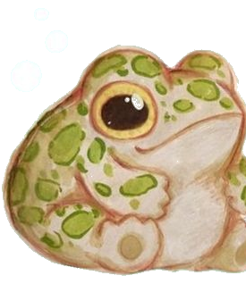
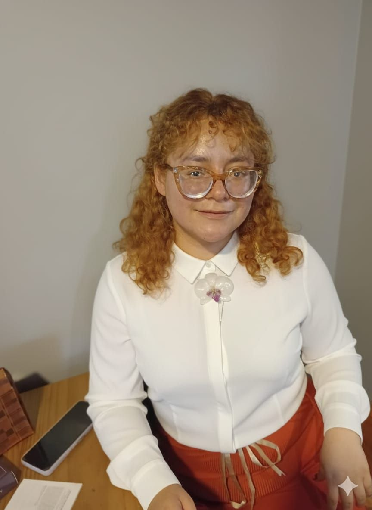
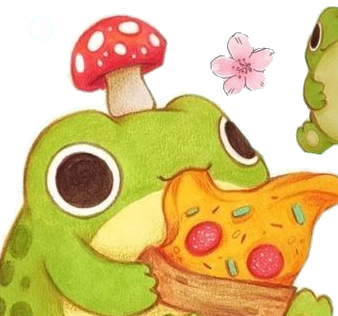
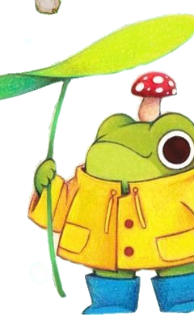

Psicología con
alma comunitaria
Acompañando procesos de transformación individual y colectiva, especialmente en la vida de mujeres y comunidades de Lima.
Conóceme
Sobre mí


✨ Katherine Ramos · Lima, Perú
Hola, soy Katherine 🌿
Psicóloga Social · Activista · Lima, Perú
Soy psicóloga social comprometida con el bienestar de las comunidades y la lucha por los derechos de las mujeres. Mi trabajo nace del convencimiento de que la salud mental es un derecho colectivo y que la psicología puede ser una herramienta de liberación y transformación social.
He trabajado en poblaciones vulnerables de Lima, facilitando talleres psicoeducativos y acompañando a niñas, adolescentes y mujeres. Participo activamente en programas de formación feminista y en iniciativas de cuidado colectivo que buscan abordar las violencias estructurales que enfrentan las mujeres.
También ofrezco sesiones de orientación y consejería en un espacio de escucha seguro, cálido y libre de juicios, con perspectiva de género y derechos humanos.
Mi recorrido
Experiencia con la comunidad
Trabajo Comunitario
Intervenciones directas en poblaciones vulnerables, acercando la salud mental a quienes más la necesitan.
Talleres psicoeducativos
Espacios de aprendizaje y reflexión para niñas, adolescentes y jóvenes de la comunidad.
Enfoque de género
Formación, debate y acción colectiva por los derechos y la autonomía de las mujeres.
Formación académica
Crecimiento profesional en la intersección entre psicología, comunidad y justicia social.
Hablemos
Contacto

🍄 Sesiones de Orientación y Consejería
¿Buscas un espacio seguro para trabajar en tu bienestar emocional? Ofrezco sesiones individuales con perspectiva de género y enfoque en derechos humanos, en un espacio cálido, confidencial y libre de juicios.
💬 Solicitar una sesión